Palestrantes:
Prof. Dr. Willian de Souza Santos - UFU
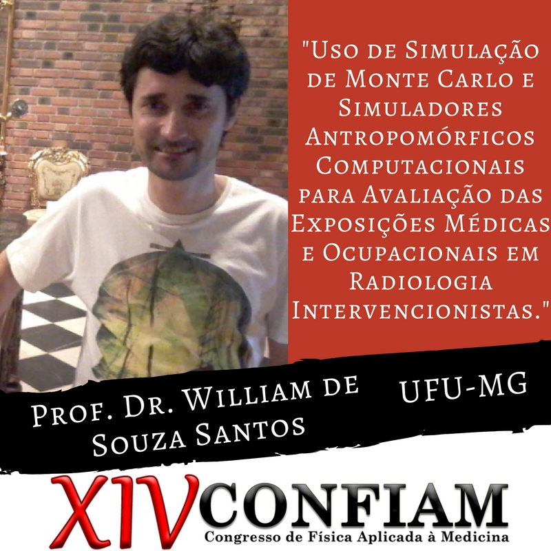
O Prof. Dr. Willian de Souza Santos é do Instituto de Física da Universidade Federal de Uberlândia (UFU) e vem de Minas Gerais para nos prestigiar este ano no Confiam!
William de Souza Santos, possui graduação em Física pela Universidade Estadual do Sudoeste da Bahia (UESB), Mestrado e Doutorado em Física da Matéria Condensada pela Universidade Federal de Sergipe (UFS). Fez dois Pós-Doutorado no IPEN/USP. Atualmente, é professor adjunto da Universidade Federal de Uberlândia. Tem experiência na área de Física Médica, com ênfase em Dosimetria em Radiodiagnóstico, Dosimetria Numérica e Proteção Radiológica.
Prof. Dra. Alessandra Tomal - UNICAMP
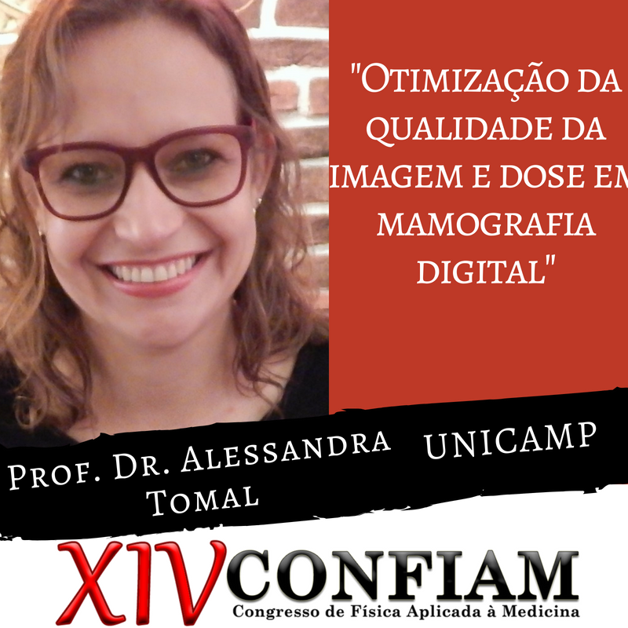
A Profª. Drª. Alessandra Tomal é do Instituto de Física Gleb Wataghin da Universidade Estadual de Campinas (UNICAMP).
Alessandra possui graduação em Bacharelado em Física pela Universidade Estadual de Ponta Grossa (2004), mestrado (2007) e doutorado (2011) em Física Aplicada à Medicina e Biologia pela Universidade de São Paulo, campus de Ribeirão Preto. Realizou um estágio de pós-doutorado (2011-2012) na Universidade de São Paulo. Atualmente é professora doutora (MS3.1) do Instituto de Física Gleb Wataghin, UNICAMP. Foi Professora Adjunta do Instituto de Física da Universidade Federal de Goiás (UFG) de novembro de 2012 a março de 2014. Tem experiência na área de Física Médica, com ênfase em Física das radiações, atuando principalmente nos seguintes temas: radiodiagnóstico, mamografia, formação da imagem, dosimetria, absorção de raios X, simulação Monte Carlo e espectrometria de raios X.
Drª. Simone Carvalho Cunha - UFF
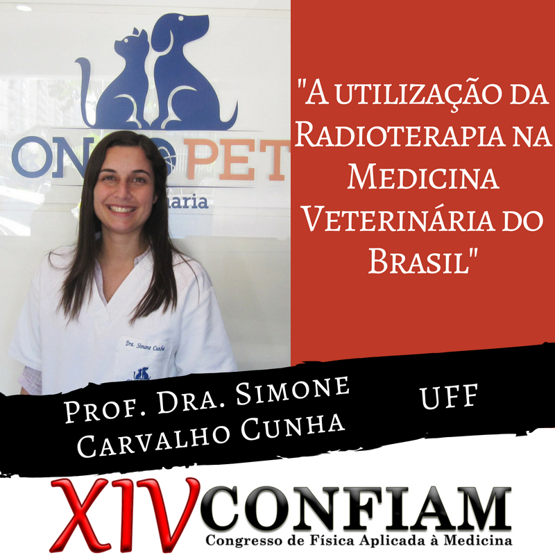A Drª. Simone Carvalho Cunha é oncologista da Oncopet Veterinária e vem do Rio de Janeiro para nos prestigiar este ano no Confiam!
Nesta palestra, serão abordados os principais protocolos de radioterapia utilizados na medicina veterinária, limitações e dificuldades em relação à radioterapia humana, além de casos clínicos.
Simone Carvalho dos Santos Cunha possui graduação, mestrado em Clínica e Reprodução Animal, doutorado em clínica e Reprodução animal com ênfase em oncologia de felinos, e pós-doutorado em oncologia veterinária pela Universidade Federal Fluminense (UFF) - RJ. Simone fez estágio em Radioterapia Veterinária no Animal Câncer Center, na Universidade do Colorado - EUA. Atualmente é oncologista da Oncopet Veterinária (especializada em oncologia de cães e gatos).
Tadeu Kubo - SBMN
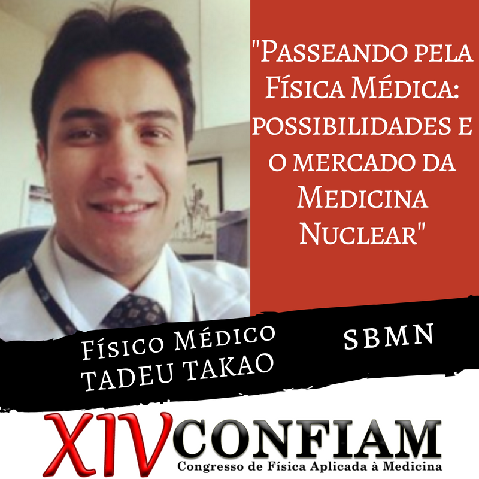Tadeu Kubo é Físico Médico e atua na área de Medicina Nuclear.
O foco da palestra será trazer a experiência pessoal do palestrante na área de Física Médica contando um pouco sobre as possibilidades após a universidade e caminhos a serem trilhados. Abordando, também, a importância do desenvolvimento pessoal, planejamento e os primeiros passos para criar sua própria empresa. Serão apresentados dados sobre o mercado de trabalho atual da Medicina Nuclear no território nacional e perspectivas.
Tadeu Kubo possui graduação em Física Médica pela Universidade de São Paulo (USP), mestrado em radioproteção e dosimetria pelo IRD/CNEN, MBA Executivo pela COPPEAD UFRJ, atualmente é estudante de doutorado do CDTN/CNEN, coordenador do departamento de Física Médica da Sociedade Brasileira de Medicina Nuclear (SBMN), secretário regional da região Sudeste - Centro Oeste da ABFM, está na diretoria de Medicina Nuclear da ABFM e é Físico Médico na empresa PhysRAD.
Maurício Tizziani Pazianotto - ITA
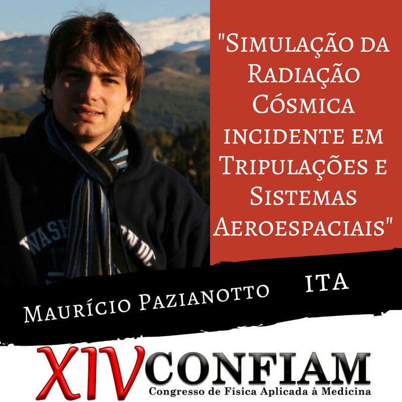O Prof. Dr. Maurício Pazianotto é Físico Médico e atua na área de aeronáutica pelo ITA.
Nas últimas décadas, considerando o desenvolvimento de aeronaves com teto de operação mais alto e de maior autonomia, bem como o significativo crescimento do fluxo aéreo, o problema do controle do nível de dose de radiação ionizante recebida pelos pilotos, tripulação e equipamentos eletrônicos das aeronaves, passou a preocupar as organizações de radioproteção e de segurança de voo. Assim, o estudo dos efeitos da radiação cósmica atmosférica em aviônicos, tripulações e sistemas detectores embarcados em voo requer uma descrição detalhada do campo de radiação incidente na aeronave. Neste contexto, na palestra, será apresentado o desenvolvimento da primeira plataforma computacional Sul-Americana capaz de desenvolver cálculos do transporte da radiação cósmica na atmosfera com aplicações em dosimetria aeronáutica.
Maurício possui graduação em Física Médica (2009) pela Universidade Estadual Paulista Júlio de Mesquita Filho (UNESP) e, mestrado (2012) e doutorado (2015) em Física pelo Instituto Tecnológico de Aeronáutica (ITA). Atualmente é Professor no Instituto Tecnológico de Aeronáutica. Desenvolve estudos relacionados à dosimetria em aeronáutica, ao transporte da radiação cósmica e partículas secundárias na atmosfera, à modelagem de sistemas de detecção de nêutrons de altas energias e à avaliação de dados nucleares com aplicação em terapias com feixes de íons e medicina nuclear. É pesquisador colaborador do Instituto de Estudos Avançados (IEAv).
Alexandre Bacelar - HCPA
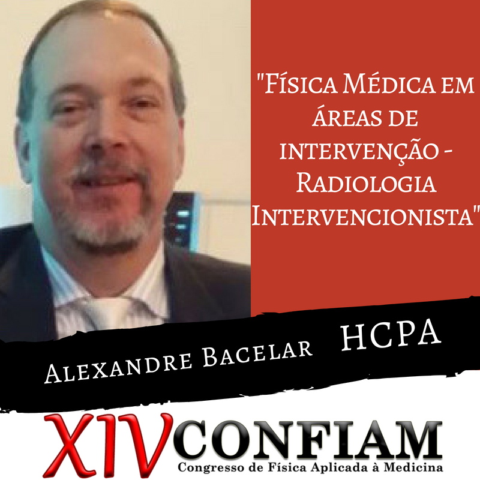O Físico Alexandre Bacelar atua na área de Radiodiagnóstico, e vem de Porto Alegre nos prestigiar.
A palestra abordará temas que envolvem a atuação do Físico, entre eles estão temas como indicadores de exposição de pacientes e colaboradores, utilização prática de medidores online durante os procedimentos médicos, radiologia intervencionista e os efeitos biológicos.
Alexandre possui graduação em licenciatura em Ciências e em Física pela Pontifícia Universidade Católica do Rio Grande do Sul (PUCRS), Especialização em Engenharia da Qualidade e Especialização em Administração Hospitalar pela PUCRS e Mestrado em Ciências Médicas (Radiologia) pela Universidade Federal do Rio de Janeiro (UFRJ). Foi presidente da Associação Brasileira de Física Médica (ABFM), em 2014 e 2015, e Conselheiro da Sociedade Brasileira de Proteção Radiológica, em 2013 e 2014. Atualmente é Coordenador da Comissão de Proteção Radiológica, Coordenador da Residência em Física Médica e Chefe de Serviço Física Médica e Radioproteção do Hospital de Clínicas de Porto Alegre (HCPA) / UFRGS. Tem experiência na área em Física Médica, atuando principalmente nos seguintes temas: física médica, proteção radiológica, garantia de qualidade, radiologia diagnóstica e qualidade de imagens.
André Neto - SIEMENS
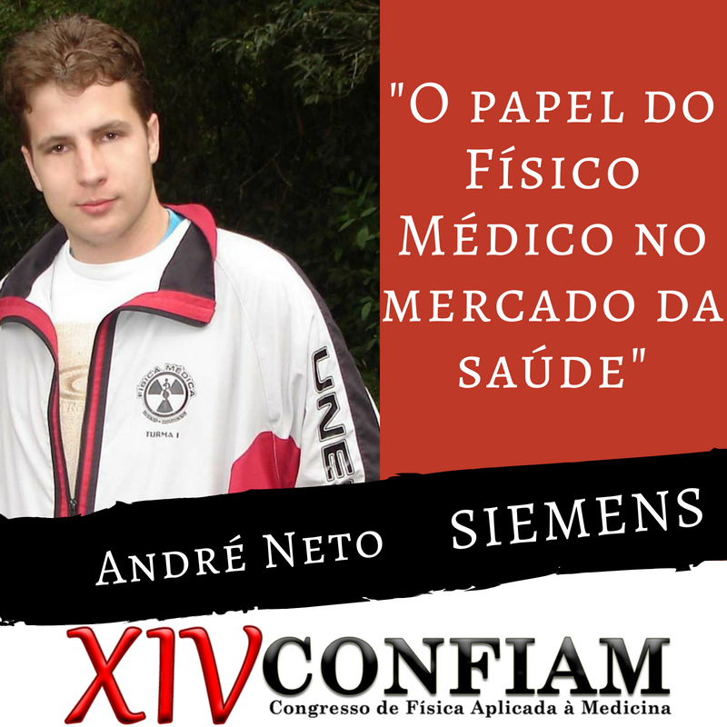O Físico André Neto trabalha na área de Empreendedorismo na empresa Siemens, uma das principais distribuidoras de aparelhos da área médica.
O número de empresas voltadas à equipamentos e serviços na área da saúde vem crescendo exponencialmente em números e importância, com base nesse cenário essa palestra abordará o lugar do físico médico nessa realidade, enfatizando suas diversas ocupações. Empresas de equipamentos de radiologia, diagnóstico por imagem, terapias por radiação ou de radiofármacos têm integrado em seu corpo de funcionários um físico médico, devido sua qualificação para apresentar parâmetros físicos de funcionamento e ao mesmo tempo entender, biologicamente, o papel e inovação que o produto traz ao mercado. Outro papel que vem sendo ocupado por físicos médicos é em laboratórios e centros de pesquisa e desenvolvimento de novas tecnologias, onde a multidisciplinaridade e familiaridade com pesquisa é de fundamental importância. Um setor de relevância na física médica são as empresas especializadas em radioproteção e controle de qualidade, que cada vez mais ganham espaço em clínicas e centros hospitalares.
André é Físico Médico formado pela Universidade Estadual Paulista Júlio de Mesquita Filho de Botucatu (UNESP), pós graduado em gestão empresarial pela Fundação Getulio Vargas (FGV), professor convidado do curso de pós graduação em Imaginologia da Universidade do Sagrado Coração de Bauru (USC) e Key Account Manager da Siemens.
Adilson Pereira - IPEBJ
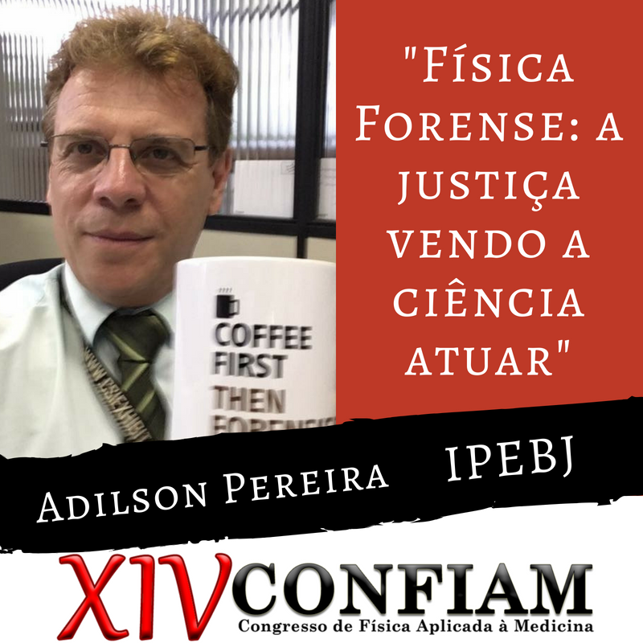O Prof. Esp. Adilson Pereira atua na área de Física Forense, e vem para a XIV edição do Confiam para mostrar mais sobre esta área tão importante, e como um Físico é essencial nela!
A resolução de casos judiciais usando a ciência é essencial na atual conjuntura mundial e brasileira. Pensemos, o que é mais imparcial que o uso da ciência para dar respostas? Então onde a ciência é usada na sua plenitude, na justiça, pode ter certeza, a democracia é forte.
Adilson é Físico graduado na UNISA (Universidade de Santo Amaro – São Paulo). Perito Criminal desde 1987. Perito Criminal Classe Especial. Assessor Técnico da Diretoria Geral do Instituto de Criminalística de São Paulo (2000-2004 e de 2015 até hoje). Atuou em locais de crime por 14 anos. 7 ANOS - Diretor do Núcleo de Física do Instituto de Criminalística da Superintendência da Polícia Técnico Científica de São Paulo. 1 ANO - Diretor Geral dos Núcleos laboratoriais da Polícia Técnico-Científica de São Paulo; 2 ANOS - Diretor Geral do Instituto de Criminalística do Estado de São Paulo. Professor da Academia de Polícia de São Paulo/SP desde 2001 – Área Criminalística. Coordenador e Docente no IPEBJ. Professor de pós-graduação em Ciências Forenses nas seguintes instituições: Instituto Português de Psicologia e Outras Ciências, Porto/Portugal. IPEBJ - Instituto Paulista de Estudos Bioéticos e Jurídicos de Ribeirão Preto/SP desde 2010. UniFMU – Unidade Santo Amaro – São Paulo – Capital, desde 2013. Atua nas seguintes áreas da perícia e ensino (teoria e prática):Criminalística; Balística Forense; Física Forense. Levantamento Técnico de Local de Crime; Perícias em Acidentes de Trânsito; Noções e Perícias em explosivos; Análises e Coleta de Manchas e Impressões em Locais de Crimes. Especialização em Investigação Técnico Científica de Cenas de Crime em Geral (2009) e em Cenas de Crimes de Homicídio em 2011, CSI (Crime Scene Investigator) pelo Lake Technical Center, Institute of Public Safety, Florida, USA. Agraciado com as seguintes medalhas: Medalha do Mérito Técnico Científico “Governador Mário Covas” pelos trabalhos técnicos realizados na Polícia Científica de São Paulo; Medalha 9 de Julho outorgado por serviços prestados a cultura, serviços humanitários, trabalhos sociais, a arte em geral e à Democracia e ao Estado de São Paulo; Medalha Constitucionalista serviços relevantes prestados à São Paulo e ao culto aos ideais cívicos e patrióticos atrelados ao movimento da Revolução Constitucionalista de 1932; Medalha de bronze da Academia de Polícia do Estado de São Paulo, pelos 10 anos de trabalho acadêmico (bronze 10 anos, prata 20 anos e ouro 30 anos); Medalha do Corpo de Bombeiros do Estado de São Paulo pelo apoio técnico científico à corporação.
Fernando Bacchim - CNPEM
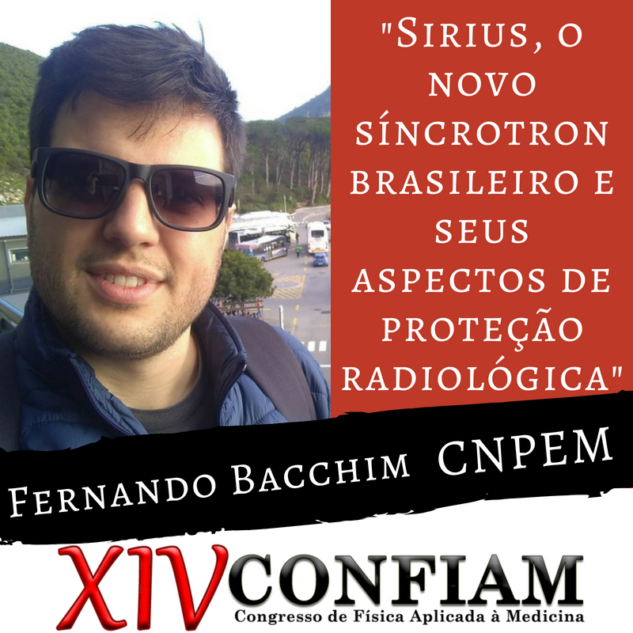O Físico Médico Fernando Bacchim está atualmente inserido no projeto Sirius do CNPEM, e vem nos prestigiar para mostrar mais sobre este novo campo da Física.
Sirius será a nova fonte de luz síncrotron brasileira, a maior e mais complexa infraestrutura científica já construída no País e uma das primeiras fontes de luz síncrotron de 4ª geração do mundo. Está sendo planejado para colocar o Brasil na liderança mundial de produção de luz síncrotron e foi projetada para ter o maior brilho dentre todos os equipamentos na sua classe de energia. A palestra abordará princípios físicos básicos da radiação síncrotron e de proteção radiológica, para então, entender os principais pontos que norteiam a construção do projeto de proteção radiológica de uma estrutura que receberá, além de muitos funcionários diariamente, diversos pesquisadores em coleta de dados a cada dia.
Bacchim possui graduação em Física Médica pela Universidade Estadual Paulista "Júlio de Mesquita Filho" (UNESP). Tem experiência na área de Física Médica, com ênfase em Proteção Radiológica e Qualidade de Imagens. Atua em projetos de pesquisa e extensão relacionados com Proteção Radiológica.
Guerda Massillon - UNAM (México)
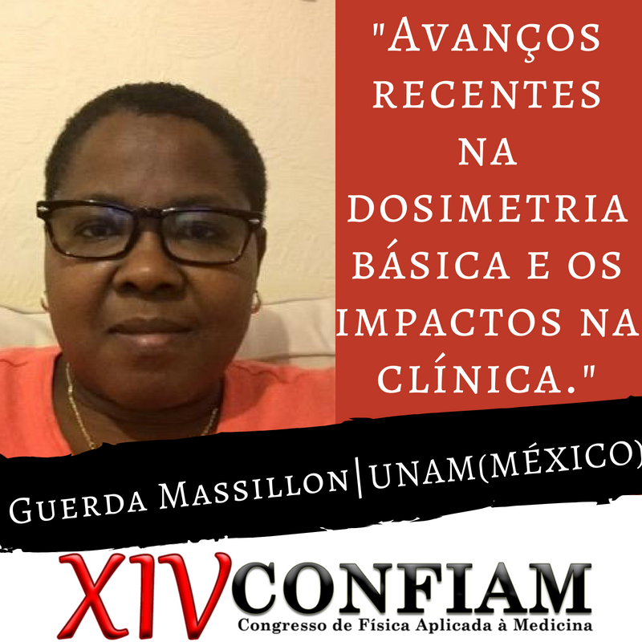A Drª. Guerda Massillon vem do México nos prestigiar nesta edição do XIV Confiam, nos trazendo conhecimento sobre Radioterapia e Dosimetria!!
A radioterapia moderna faz uso de pequenos campos de radiação (até ~ 4 mm de diâmetro) e às vezes complexos, a fim de dar melhor tratamento aos pacientes. No entanto, essa complexidade acaba sendo um desafio para quem atua na área de dosimetria e para quem se encarrega de fornecer informações precisas ou exatas sobre a dose que o paciente recebe durante o tratamento utilizando essas técnicas. Por mais de 30 anos, não foi possível estabelecer, com certeza, um protocolo padrão para tamanhos de campo menores que 1 cm, devido à grande variação dos resultados experimentais (ou calculados) da resposta dos dosímetros disponíveis no mercado. Pesquisas sobre dosimetria básica e aplicada conduzidas no IFUNAM nos últimos anos sugerem uma falta de conhecimento sobre os processos de deposição de energia na matéria em campos de radiação semelhantes aos utilizados na radioterapia moderna. Nesta palestra, apresentaremos alguns resultados obtidos a partir da dosimetria básica e sua aplicação na clínica.
Massillon tem graduação em Ciências Físicas, pela Ecole Normale Supérieure (ENS), Université d’Etat d’Haiti (UEH), Haití em 1996, mestrado em Ciências (Física Médica), PCF UNAM, México em 2001, doutorado em Ciências (Física) e pós-doutorado em Ciências Físicas (PCF), pela Universidade Nacional Autônoma de México (UNAM), Cidade do México, em 2006, e pós-doutorado no Instituto Nacional de Padrões e Tecnologia (NIST), Gaithersburg, MD, EUA em 2009. Guerda teve experiências profissionais como pesquisadora convidada, na Divisão de Física de Radiação, pelo NIST, EUA em 2009, pesquisadora associada C, T.C., no Instituto de Física, UNAM, em 2010, pesquisadora convidada, pelo Departamento de Física, Carleton University, Ottawa, Canadá, em 2012, pesquisadora convidada, pelo Laboratório de Medição Física, NIST, Gaithersburg, MD, EUA, em 2012, pesquisadora visitante no Atomistic Simulation Center, Universidade Queen's Belfast, Reino Unido, de 2015 a 2016, e 2018. A Doutora também foi assessora temporária da Organização Pan-Americana da Saúde (OPAS) e da Organização Mundial da Saúde Saúde (OMS), no âmbito de uma "Avaliação da Proteção Radiológica no Haiti", em 2000, tradutora e revisora da 40ª Olimpíada Internacional de Física, México, em 2009, foi coordenadora da Escola de Inverno em Ciências Básicas e Engenharia na UEH, Haiti, em 2011 e 2013, no âmbito do Projeto de Cooperação Acadêmica das Instituições de Ensino Superior do México para apoiar o sistema universitário e a reconstrução do Haiti, onde a UNAM é responsável, fez parte de um grupo de trabalho da Associação Americana de Físicos em Medicina (AAPM), em 2012 a 2015, presidente do Comitê Científico e organizadora do XIV Simpósio Mexicano de Física Médica, Cidade do México, em 2016, vice-presidente da Divisão de Física Médica da Sociedade Mexicana de Física, de 2016 a 2018, organizadora da Escola de Verão sobre abordagens experimentais e modelagem de fenômenos de irradiação em Física Médica, Instituto de Física, UNAM México, em 2017, organizadora da escola de Pré-Simpósio sobre Dosimetria em Física Médica, C3-UNAM, México, em 2018. Atualmente é membro da Sociedade Mexicana de Física, no México, e na Associação Americana de Físicos na Medicina (AAPM), nos EUA, coordenadora de atividades de Ciência e Tecnologia para a reconstrução da Université d'Etat d'Haiti (UEH) e Reitora da UEH, Haiti, desde 2010, e é pesquisadora principal no Instituto de Física, UNAM, desde 2010.
Minicursos:
Alexandre Bacelar - HCPA
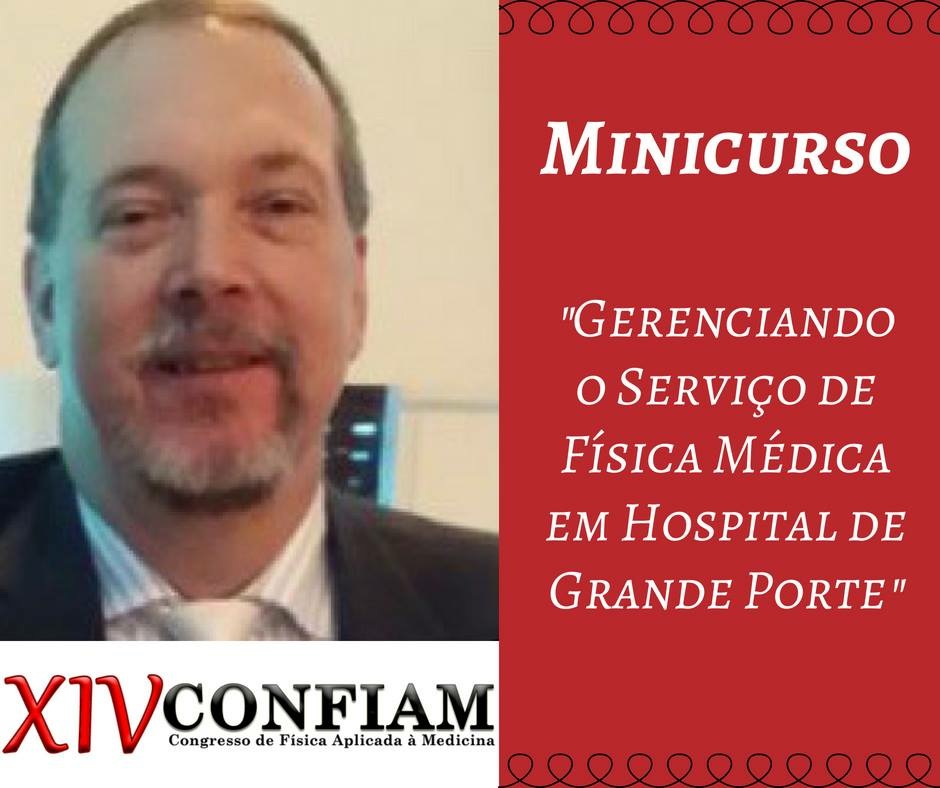O Físico Alexandre Bacelar atua na área de Radiodiagnóstico, e além de nos prestigiar com uma palestra sobre o assunto, irá ministrar um minicurso no congresso.
O curso trará noções sobre o papel do Físico Médico em um hospital de grande porte, contando sobre a formação do serviço, a missão e visão do profissional, estrutura, áreas de atuação, concurso para tal serviço, remuneração, indicadores, aquisição e avaliação de equipamentos médicos, de medidas e epi’s, garantia da qualidade, auditorias, PACS Admin (uma nova área de atuação), Comissão Permanente de Proteção Radiológica, e sobre a residência em Física Médica.
Alexandre possui graduação em licenciatura em Ciências e em Física pela Pontifícia Universidade Católica do Rio Grande do Sul (PUCRS), Especialização em Engenharia da Qualidade e Especialização em Administração Hospitalar pela PUCRS e Mestrado em Ciências Médicas (Radiologia) pela Universidade Federal do Rio de Janeiro (UFRJ). Foi presidente da Associação Brasileira de Física Médica (ABFM), em 2014 e 2015, e Conselheiro da Sociedade Brasileira de Proteção Radiológica, em 2013 e 2014. Atualmente é Coordenador da Comissão de Proteção Radiológica, Coordenador da Residência em Física Médica e Chefe de Serviço Física Médica e Radioproteção do Hospital de Clínicas de Porto Alegre (HCPA) / UFRGS. Tem experiência na área em Física Médica, atuando principalmente nos seguintes temas: física médica, proteção radiológica, garantia de qualidade, radiologia diagnóstica e qualidade de imagens.
Felipe Favaro Capeleti - GPM
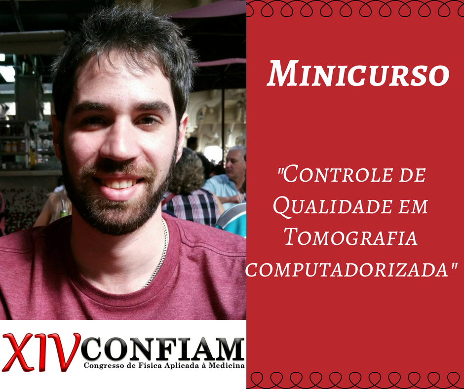Felipe é Físico Médico e atua como físico responsável nos seguintes temas: radiodiagnóstico, controle de qualidade, proteção radiológica, consultoria e assessoria em Física Médica e como Professor Instrutor na Faculdade de Ciências Médicas da Santa Casa de São Paulo, e este ano vem nos prestigiar passando seu conhecimento sobre “Controle de Qualidade em Tomografia Computadorizada”.
Neste minicurso serão apresentados os princípios utilizados para as avaliações dos controles de qualidade da imagem e as dosimetrias em equipamentos de tomografia computadorizada multidetectores. Além disso, de acordo com a rápida evolução dos TCs, serão discutidos as novas formas de dosimetria e a aplicabilidade das mesmas.
Capeleti possui graduação em Bacharelado em Física Médica UNESP Botucatu, em 2010, mestrado em Tecnologia Nuclear Aplicada pelo IPEN, em 2014, é especialista em Radiodiagnóstico pela Associação Brasileira de Física Médica (ABFM). Atualmente é sócio responsável da empresa GMP-Consultoria em Radioproteção e Física Médica e Assessoria LTDA, atuando como físico responsável nos seguintes temas: radiodiagnóstico, controle de qualidade, proteção radiológica, consultoria e assessoria em Física Médica, Professor Instrutor na Faculdade de Ciências Médicas da Santa Casa de São Paulo dos cursos de tecnologia. Felipe tem experiência em Física Médica, com ênfase em Radiodiagnóstico atuando principalmente em Controle de Qualidade, Dosimetria, Tomografia, Ultrassom e Ressonância Magnética.